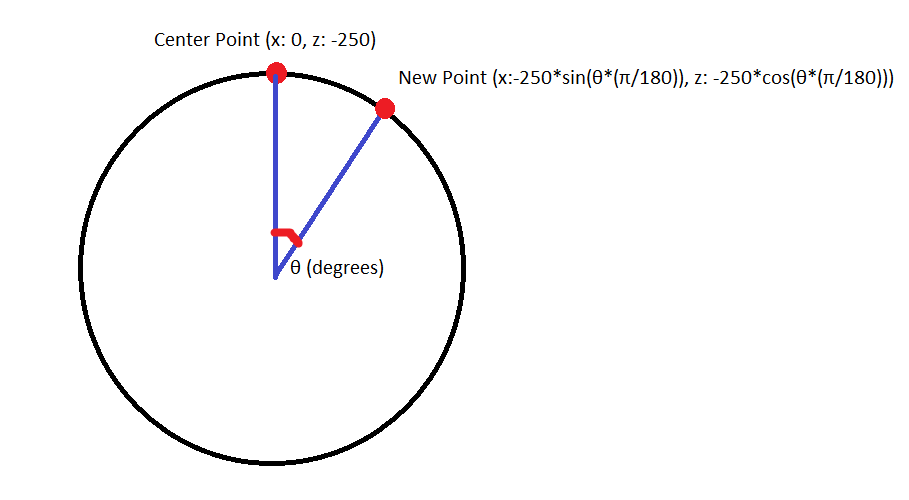

Entities
Universal Settings
- Position
The position of an entity refers to where its center point is located. Positional data is calculated based on a cylinder that encompasses the camera. The radius of this cylinder can be changed and the cylinder has an infinite height.
- \({\alpha}\) (deg)
The horizontal position in the fov, calculated as an offset from the center point
1 degree represents 1 degree of clockwise rotation away from the fixed camera center on the cylinder
Moving an entity horizontally will rotate it to face the camera
- y (m)
The vertical position in the fov
This axis is in terms of world units where 1 world unit is equal to 1 meter in 3D space
- z (m)
The distance from the camera
This axis is in terms of world units where 1 world unit is equal to 1 meter in 3D space
- Rotation (deg)
The axis of rotation is located at the position coordinate of the entity and faces the camera
- Color
The primary color of the entity
{kind=link}
Advanced Universal Settings
Advanced mode offers more freedom with position and rotation than standard mode. Entities no longer move around a cylindircal plane, but instead move in 3D space.
- Position
The position of an entity refers to where its center point is located. The location of the camera is noted as \((0,0,0)\)
- x (m)
The horizontal position in the fov
This axis is in terms of world units where 1 world unit is equal to 1 meter in 3D space
Moving an entity horizontally will no longer rotate it to face the camera
- y (m)
The vertical position in the fov
This axis is in terms of world units where 1 world unit is equal to 1 meter in 3D space
- z (m)
The distance from the camera
This axis is in terms of world units where 1 world unit is equal to 1 meter in 3D space
- Rotation
The axis of rotation is located at the position coordinate of the entity and faces the camera
- x (deg)
rotation about the x axis
- y (deg)
rotation about the y axis
- z (deg)
rotation about the z axis
- Color
The primary color of the entity
Entity Chart
Entity Name |
Attribute 1 |
Attribute 2 |
Attribute 3 |
Attribute 4 |
Attribute 5 |
Circle |
|
|
n/a |
n/a |
n/a |
Plane |
|
|
Border Size (m) - Amount of fill - Default: 31.25 m |
Textures - Using Textures - Default: none |
n/a |
Triangle |
|
|
Vertex C (x (m),y (m)) - Amount of fill - Default: (31.25, -31.25) |
n/a |
n/a |
Gradient |
|
|
Number of Bars - Number of bars in gradient - Default: 32 |
Secondary Color - Color to fade into - Default: Black (#000000) |
n/a |
Checkerboard |
|
|
Number of Rows - Number of rows in the board - Default: 17 |
Secondary Color - Color of secondary tiles - Default: Black (#000000) |
n/a |
Grille |
|
|
Number of Bars - Number of bars in grille - Default: 32 |
Secondary Color - Color of secondary bars - Default: Black (#000000) |
n/a |
Dot Array |
|
|
Radius of Dots (m) - Radius of each dot - Default: 2 |
Spacing of Dots (m) - Space between dots - Default: 10 |
Toggle Center Dot - Whether center dot is filled - Default: No |
Circular Dot Array |
|
|
Radius of Dots (m) - Radius of each dot - Default: 2 |
Spacing of Dots (m) - Space between dots - Default: 10 |
Toggle Center Dot - Whether center dot is filled - Default: No |
Bullseye |
|
|
n/a |
n/a |
n/a |
Using Textures
There are some textures built into the site. They can be found here.
Textures can also be uploaded as JPGs, PNGs or TIFFs and added to the list of available textures.
Applying a texture will automatically scale the plane to fit the aspect ratio.
Circle
- Radius (m):
Radius of the circle
- Border Size (m):
Amount of fill
By default, the border size is set to be equal to the radius of the circle so the circle is filled in
Plane
- Height (m):
Height of the plane
- Width (m):
Width of the plane
- Border Size (m):
Amount of fill
By default, the border size is set to be equal to the radius to the smallest dimension present of the plane, meaning the entity is entirely filled in.
- Texture:
There are some textures built into the site. They can be found here. Textures can also be uploaded as JPGs, PNGs or TIFFs and added to the list of available textures.
Applying a texture will automatically scale the plane to fit the aspect ratio.
Triangle
- Vertex A (x (m),y (m)):
Position of vertex A in relation to the center point (position) of the entity
- Vertex B (x (m),y (m)):
Position of vertex B in relation to the center point (position) of the entity
- Vertex C (x (m),y (m)):
Position of vertex C in relation to the center point (position) of the entity

Gradient
- Individual Bar Height (m):
Height of each bar
Default is 18.75
- Indivdual Bar Width (m):
Width of each bar
Default is 6.25
- Number of Bars:
The number of bars in the gradient
Default is 32
- Secondary Color:
The color that the gradient fades to
Default is black
Checkerboard
- Tile size (m):
Width and height of each tile
Default is 5
- Number of Columns:
Number of columns in the checkerboard
Default is 16
- Number of Rows:
Number of rows in the checkerboard
Default is 17
- Secondary Color:
The color of the alternate tiles
Default is black
Grille
- Individual Bar Height (m):
Height of each bar
Default is 31.25
- Indivdual Bar Width (m):
Width of each bar
Default is 6.25
- Number of Bars:
The number of bars in the grille
Default is 32
- Secondary Color:
The color of the alternate bars
Default is black
Dot Array
- Number of columns:
Number of columns in the dot array
Default is 5
- Number of rows:
Number of rows in the dot array
Default is 5
- Radius of dots (m):
Radius of each dot
Default is 2
- Spacing of dots (m):
Space between each dot
Default is 10
- Fill center dot:
Whether center dot is filled or hollow
Default is hollow
Circular Dot Array
- Number of dots:
Number of dots in each circle
Default is 10
- Number of circles:
Number of circles in circular dot array
Default is 5
- Radius of dots (m):
Radius of each dot
Default is 2
- Spacing of circles (m):
Space between each circle
Default is 10
- Fill center dot:
Whether center dot is filled or hollow
Default is hollow
Bullseye
- Number of rings:
Number of rings in the bullseye
Default is 5
- Ring pitch (m):
Pitch of rings
Default is 5